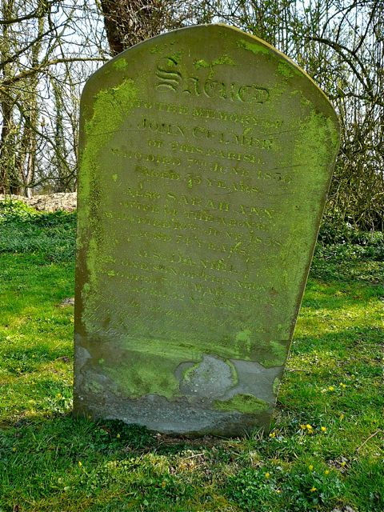
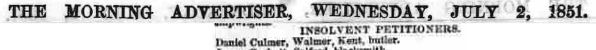

Daniel Culmer 1809 - 1862
[ Home ] | [ Calendar ] | [ Surnames Index ] | [ Errors ] | [ Family History ]A butler and the child of John Culmer (a parish clerk) and Sarah Hawkes, Daniel Culmer, the four times great-uncle of Nigel Horne, was born in Stourmouth, Kent, England on 19 Jun 18091,2,3,4 and baptised there at All Saints Church, Church Lane on 23 Jul 1809. He married Ann Goodchild in Eastry, Kent, England around Feb 18429.
During his life, he was living at Walton House in Eastry on 6 Jun 184111; at 58 High Street, Walmer, Kent on 30 Mar 185112; and at The Vicarage, Castleton, Lancashire, England on 7 Apr 186113 following the death of his wife on 23 Nov 1851.
He died on 30 Mar 1862 in Stourmouth5,6,7,8 and was buried there after 30 Mar 18628,10.
Parents
- John was born c. 1781
- Sarah Anne was born c. 1782
Citations
- 1841 England Census Online publication - Provo, UT, USA: The Generations Network, Inc., 2006.Original data - Census Returns of England and Wales, 1841. Kew, Surrey, England: The National Archives of the UK (TNA): Public Record Office (PRO), 1841. Data imaged from the National
- 1851 England Census Online publication - Provo, UT, USA: The Generations Network, Inc., 2005.Original data - Census Returns of England and Wales, 1851. Kew, Surrey, England: The National Archives of the UK (TNA): Public Record Office (PRO), 1851. Data imaged from the National
- 1861 England Census Online publication - Provo, UT, USA: The Generations Network, Inc., 2005.Original data - Census Returns of England and Wales, 1861. Kew, Surrey, England: The National Archives of the UK (TNA): Public Record Office (PRO), 1861. Data imaged from the National
- Kent, England, Tyler Index to Parish Registers, 1538-1874 Online publication - Provo, UT, USA: Ancestry.com Operations, Inc., 2010. This collection was indexed by Ancestry World Archives Project contributors.Original data - Frank Watt Tyler. The Tyler Collection. Canterbury, Kent, England: The Institute of Herald
- England & Wales, FreeBMD Death Index: 1837-1915 Online publication - Provo, UT, USA: The Generations Network, Inc., 2006.Original data - General Register Office. England and Wales Civil Registration Indexes. London, England: General Register Office. © Crown copyright. Published by permission of the Cont
- England & Wales, FreeBMD Death Index: 1837-1915 Online publication - Provo, UT, USA: The Generations Network, Inc., 2006.Original data - General Register Office. England and Wales Civil Registration Indexes. London, England: General Register Office. © Crown copyright. Published by permission of the Cont
- England & Wales, National Probate Calendar (Index of Wills and Administrations),1861-1941 Online publication - Provo, UT, USA: Ancestry.com Operations Inc, 2010.Original data - Principal Probate Registry. Calendar of the Grants of Probate and Letters of Administration made in the Probate Registries of the High Court of Justice in England. Londo
- UK and Ireland, Find A Grave Index, 1300s-Current Ancestry.com Operations, Inc.
- England & Wales Marriages 1837-2005 - Findmypast
- Web: International, Find A Grave Index Ancestry.com Operations, Inc.
- 1841 England, Wales & Scotland Census - Findmypast (was age 30)
- 1851 England, Wales & Scotland Census - Findmypast (was age 41 and a servant in the household)
- 1861 England, Wales & Scotland Census - Findmypast (was age 51 and a boarder in the household Relation to Head of House: Butler)
Notes
Declared insolvent around 4th Aug 1851.
Media
john and daniel culmer - sally hawkes - gravestone

Daniel Culmer - will
Morning Advertiser

Perrys Bankrupts Gazette
1841 UK Census

1851 UK Census

1861 UK Census

Canterbury Baptisms Transcription - GBPRS-CANT-B-96716017
England, Births & Baptisms 1538-1975 Transcription - R_883903485
Index to Death Duty Registers Transcription - BMD-D-DDUTY-1063912
Probate Calendars of England & Wales 1858-1959 - Browse Image - GBOR-MANC-RATE-1862-C-0330
England, Births & Baptisms 1538-1975 Transcription - R_883278905
England & Wales deaths 1837-2007 Transcription - BMD-D-1862-1-AH-000677-017
1841 England, Wales & Scotland Census - GBC/1841/0013930605
1851 England, Wales & Scotland Census - GBC/1851/0005921317
1861 England, Wales & Scotland Census - GBC/1861/0015987897
England & Wales marriages 1837-2005 Transcription - BMD-M-1842-1-AZ-000096-023
Family Tree

Map
Generated by ged2site. Last updated on Jul 3, 2024
Known Issues
Adding date of burial as 'aft 30 Mar 1862'